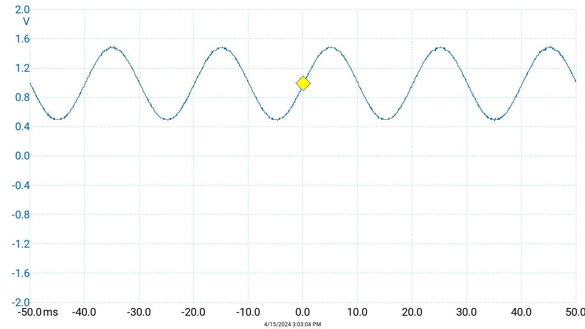
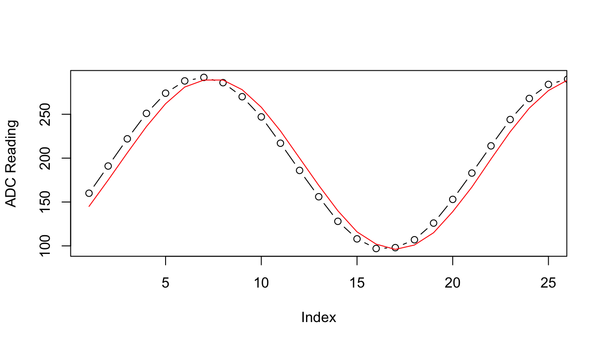

#!/bin/bash
arduino-cli compile -b arduino:avr:uno $1
arduino-cli upload -p $2 -b arduino:avr:uno $1
picocom $2 -b $3 -g $4
# Typical Usage:
# Set working directory to .../Bnmr
ls -1 /dev/cu.* # With Arduino plugged in, get the name of the port
./go.sh Bnmr.ino /dev/cu.usbmodem101 9600 outfile.txt
# $1 is the name of the Arduino code file
# $2 is the port name
# $3 is the baud rate for messages
# $4 is the filename for messages received
# ADC data is stored on a micro SD card with a filename given in user_input.h
# cntrl-A central-X to quit the Picocom windowEF-NMR Part 3: Receiver Software
EF-NMR
DIY
C
Arduino
NMRduino
UtiliDuino
Instrument control & capturing the FID
Before We Start…
NMRduino is maturing rapidly! If what I’m doing is at all interesting to you, and you don’t know about the NMRduino Project and their recent publication, be sure to check it out. It’s much more sophisticated than what’s going on here, and will be available soon.
Capturing an “FID”
In the previous post on biwise operators in C I detailed some of the machinations needed to control the ADC on an Arduino. After considerable work, that knowledge has been put to use to develop a working receiver system (though more work will be needed to perfect it). In the process, I have fine-tuned the code needed to control the instrument and collect the data in a useable form.
The Bnmr software is available on Github. The hardware used for testing and development is shown in Figure 1.

Once the proper bits were set so the ADC would collect data, I first used a simple voltage divider to generate a constant ADC signal, adjustable via a potentiometer (if one doesn’t provide some kind of input, the ADC output drifts around). With a signal available, there were many rounds of code revision so that a specified number of data points could be collected and stored somewhere.1
In terms of storage, there were issues. The Arduino has very little actual memory, so the amount of data that can be “stored” is very small. As a result, this data has to be quickly moved somewhere else with significant memory. The solution to the transient data storage is a ring buffer. I was able to implement the code found on Wikipedia in C without too much trouble. The idea behind a ring or circular buffer is that data is stored in a fixed size buffer, and added and removed in a coordinated manner via indices. However, in the big picture data must be removed from the ring buffer as fast or faster than it is put in, otherwise data is overwritten. And, it turns out that the Arduino ADC can really pump out data. In order to keep the ring buffer from filling and overwriting (which is treated as an error), I had to collect data from the ADC at a lower rate that it can produce numbers, for instance every 10th reading.2
The second problem was what to do with the data that was emptied out of the ring buffer. I spent a lot of time trying to send it to the serial port, so I could capture it from there. However, Bnmr also sends a lot of messages about various events to the serial port. These messages inform the user about what is happening and also provide troubleshooting guidance. Ultimately, it was not possible to capture the data this way – the messages invariably introduced problems with the formatting of the data. The solution was to add a micro SD card breakout board to store the data on the fly, effectively separating the message stream from the data stream. Before I settled on that approach, I also tried to use R to both send messages and capture the data.3 In addition, I also tried using a shell script and a terminal emulator to do the same. Neither was completely successful when messages and data were mixed. However, the shell script experience proved helpful in developing the final, successful approach. Another problem with having both messages and data in the same serial stream was that MacOS has a nasty habit of reseting high baud rates desirable for data collection back to lower rates. This is discussed in various forums and workarounds exist, but I could not get the overall process to be reliable and robust.
Results
With functioning software and a method to control the overall acquistion process in hand, I used the PicoScope to generate a sine wave (Figure 2). Bnmr was compiled and uploaded via a shell script calling the arduino-cli (included in the repo, see Listing 1). Control was then transferred to picocom which is a terminal emulation program, and the start signal sent to the Arduino. Once the scans completed, the micro SD card was moved from the Arduino to a dongle connected to the laptop, and analyzed using R as shown later.

Message Log File
Whatever is typed in the picocom terminal/window is sent to the serial port and then to the Arduino. All messages sent by the Arduino are echoed in the picocom window and saved to a message log file. A typical output is in Listing 2.
Looking for SD card...
SD card found & working
SD card directory:
SPOTLI~1/
FID_CSV 0
FSEVEN~5/
TRASHE~9/
Bnmr listening...
Enter g or s at any time # note: g is typed (but not echoed)
# and sent to the Arduino, which starts the program
=====================
Loading experiment...
Starting scans...
Scan no: 1
Scan no: 2
Scan no: 3
Scan no: 4
Scan no: 5
Scans complete!
Experiment complete, stopData Log File
The data log file is a comma-separated file with an entire FID/scan on one long line. There is a blank line between each data line. This is stored on the micro SD card in a file whose name is provided by the user in user_input.h (this is where all user modifiable parameters are given). We can read in the first two scans and plot the early points as follows (Figure 3).
dat <- readLines("FID_CSV")
res1 <- as.numeric(unlist(strsplit(dat[1], ", ")))
# skipping dat[2] as it is a blank line
res2 <- as.numeric(unlist(strsplit(dat[3], ", ")))
plot(x = 1:length(res1), y = res1, type = "b", xlim = c(1, 25),
xlab = "Index", ylab = "ADC Reading")
lines(x = 1:length(res1), y = res2, col = "red")

Since there is no coordination (i.e. no common time base) between the generated signal and the ADC data collection, the two sample scans are offset slightly. A common time base is very important for an NMR, so this will be one of the next items for focus.
Footnotes
Right now, a fixed number of data points are collected in whatever time it takes. This needs to be modified so that the data points are collected over a fixed amount of time, specified by the user.↩︎
There’s a potential problem here, and that is one must collect enough points to satisfy Nyquist’s criterion in order to faithfully represent a sine wave. Preliminary experiments suggest that there are plenty of data points because the ADC is extremely fast.↩︎
I spent considerable time writing an
Rpackage which I named UtiliDuino for this purpose, but ultimately it was not the best solution.↩︎
Reuse
Citation
BibTeX citation:
@online{hanson2024,
author = {Hanson, Bryan},
title = {EF-NMR {Part} 3: {Receiver} {Software}},
date = {2024-04-16},
url = {http://chemospec.org/posts/2024-04-17-EF-NMR-Build-3/EF-NMR-Build-3.html},
langid = {en}
}
For attribution, please cite this work as:
Hanson, Bryan. 2024. “EF-NMR Part 3: Receiver Software.”
April 16, 2024. http://chemospec.org/posts/2024-04-17-EF-NMR-Build-3/EF-NMR-Build-3.html.